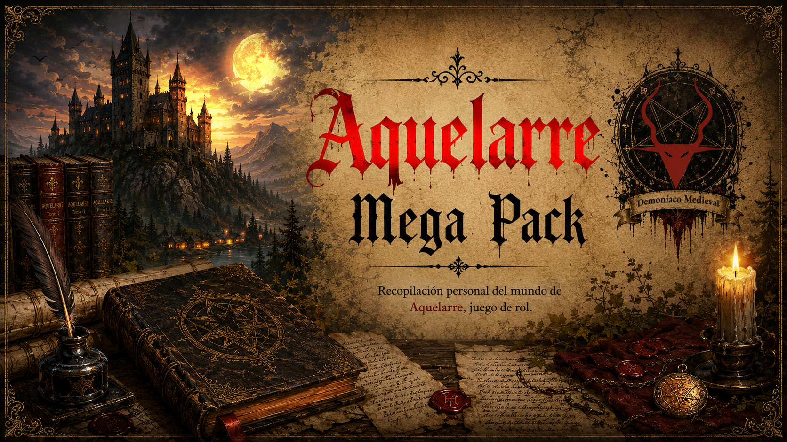

Cargando manuscritos…

./data/catalogo.js no se encuentra o tiene un formato incorrecto.Todos los materiales son obra de sus respectivos autores.
Todo este material ha sido creado y compartido por sus autores y la comunidad en algún momento por internet. Esta colección solo intenta rescatar para la conservación cultural y uso sin ánimo de lucro. Si te gusta el juego y aún está disponible, te animo a que lo compres; ya se ha convertido en una joya de la cultura de nuestro país y del mundo entero.
Maquetación por CaRLyMx (Mayo 2026) — Licencia GPL v3.
Fe de erratas: Para crear partes de este documento se ha usado IA. La IA puede cometer errores.
Aquelarre © Ricard Ibáñez
Biblioteca de Documentos
v0.9.17
Creado por CaRLyMx (2026)
Licencia: GNU General Public License v3.0
Todos los materiales son obra de sus respectivos autores. Aquelarre © Ricard Ibáñez
Tus valoraciones, favoritos, notas, estado de lectura y ajustes de visualización se guardan en el navegador.
Con ⬇ Exportar datos puedes descargar un archivo .json con toda esa información
para llevarla a otro ordenador o mantener una copia de seguridad.
Para restaurar una copia, usa ⬆ Importar datos desde el mismo panel de Configuración, o bien arrastra el archivo .json directamente a la pantalla de bienvenida al abrir la web. Si es tu primera vez y no hay datos guardados, verás una zona de destino señalada en la portada.
Consejo: exporta regularmente si usas la biblioteca desde varios dispositivos o navegadores. El archivo exportado contiene todo lo necesario para restaurar tu estado exacto.
Tus valoraciones, favoritos, estado de lectura y notas se guardan automáticamente en el
navegador (localStorage). No se pierden al cerrar la página.
Escribe en el campo de búsqueda para filtrar por título, descripción o cualquier texto. Usa los botones ★ Favoritos, ✓ Leídos para filtrar por estado, y el desplegable de tipos para filtrar por categoría. Cambia el orden con el menú desplegable y el botón ↑↓.